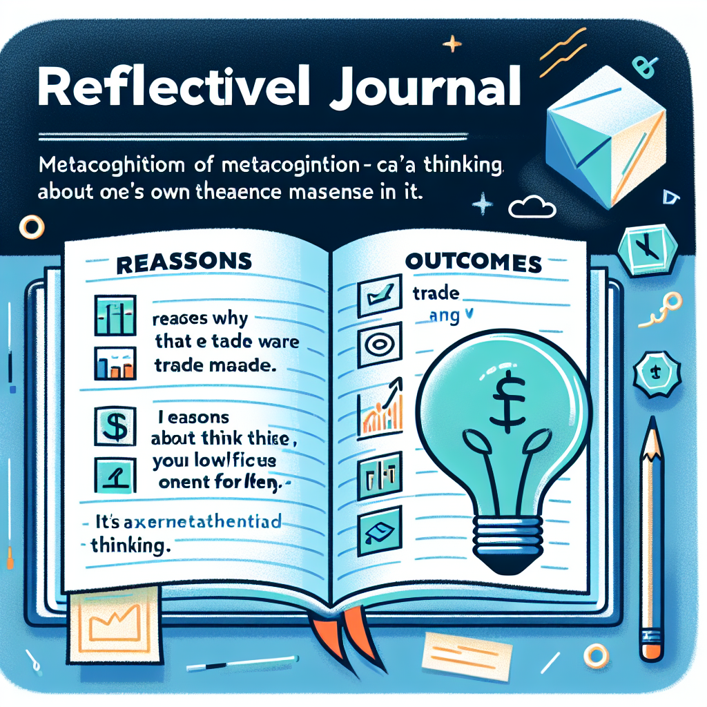

Introduction to Financial Markets
- Welcome! Begin your journey into the world of financial markets with hands-on simulations and interactive learning.
- Key Concepts Explored:
- Stocks, bonds, risk, return, diversification, and trading strategy
- Simulation Experience:
- Use MarketSim to make real-time decisions with virtual money
- Apply each concept through practical scenarios and portfolio management
- Reflection: Complete a portfolio project to reinforce your learning and track your progress.
- Diagram: Visualize the relationship between stocks, bonds, and portfolio growth using a simple flowchart.
Learning Goals
- Key Terms: Define stock, bond, dividend, risk, and return.
- Market Forces: Explain how supply and demand influence price movements in real markets.
- Math Skills: Calculate returns using basic formulas and understand the impact of gains and losses.
- Diversification: Build a portfolio that spreads risk across multiple assets and sectors.
- Strategy Comparison: Evaluate the pros and cons of long-term versus short-term investment approaches.
- Diagram: Use a concept map to connect each learning goal to practical trading scenarios.
Why Learn About Markets?
- Life Impact: Financial decisions influence your future opportunities, security, and well-being.
- Economic Role: Markets provide capital for innovation, business growth, and job creation.
- Protection: Financial literacy helps you avoid scams, make informed choices, and recognize risks.
- Safe Practice: Simulations let you experience real market volatility without risking real money.
- Empowerment: Gain confidence to manage your own investments and financial future.
- Diagram: Flowchart showing how financial education leads to smarter decisions and better outcomes.
What Is a Stock Market?
- Definition: A stock market is a public marketplace for buying and selling shares of companies.
- Participants: Investors, traders, and institutions interact to set prices through supply and demand.
- Examples: New York Stock Exchange (NYSE), NASDAQ.
- Function: Facilitates capital raising for companies and investment opportunities for individuals.
- Diagram: Simple diagram: investors ⇄ stock market ⇄ companies.
- Key Point: Prices change constantly as buyers and sellers agree on value.
Meet MarketSim
- Virtual Trading Platform: Practice trading with $100,000 in simulated cash.
- Real-Time Data: Experience live market dynamics with prices updated every few seconds (slight delay).
- Leaderboards: Compete with classmates and track your progress on the leaderboard.
- Safe Environment: Make mistakes, test strategies, and learn—no real money is at risk.
- Features:
- Buy and sell stocks and bonds
- Monitor portfolio performance
- Access research tools and charts
- Diagram: Dashboard mockup showing portfolio, recent trades, and leaderboard.
What Is a Stock?
- Ownership: Each stock represents a partial ownership in a corporation.
- Rights: Stockholders may receive dividends, vote at annual meetings, and benefit from company growth.
- Value: Stock prices fluctuate based on company performance and market conditions.
- Types: Common vs. preferred stock—different rights and priorities.
- Diagram: Pie chart showing how stockholders own a piece of the company.
- Key Point: Stocks are a primary way to build long-term wealth.
Dividends
- Definition: Dividends are cash payments distributed from company profits to shareholders.
- Frequency: Usually paid quarterly, but can vary by company.
- Purpose: Provide income in addition to potential stock price appreciation.
- Eligibility: Must own the stock before the ex-dividend date to receive payment.
- Diagram: Timeline showing announcement, ex-dividend, record, and payment dates.
- Key Point: Not all companies pay dividends; some reinvest profits for growth.
Ticker Symbols
- Definition: Unique short codes (e.g., AAPL, MSFT) assigned to publicly traded companies.
- Usage: Enter ticker symbols in MarketSim and real trading platforms to research or place trades.
- Examples: AAPL (Apple), TSLA (Tesla), GOOGL (Alphabet).
- Purpose: Quickly identify and track stocks across exchanges.
- Diagram: Table showing company names and their ticker symbols.
- Key Point: Always double-check the ticker before trading to avoid mistakes.
Your Portfolio
- Definition: Your portfolio is the total collection of stocks, bonds, and cash you own.
- Value Fluctuations: Portfolio value changes as market prices rise or fall.
- Components:
- Stocks: Ownership in companies
- Bonds: Loans to companies/governments
- Cash: Uninvested funds
- Goal: Grow your portfolio over time while managing risk.
- Diagram: Pie chart illustrating portfolio allocation.
- Key Point: Diversification helps reduce risk and smooth returns.
What Is a Bond?
- Definition: A bond is a loan you provide to a company or government in exchange for regular interest payments.
- Interest: Bonds pay fixed or variable interest, called the coupon rate.
- Risk Level: Generally less risky than stocks, but not risk-free.
- Types: Corporate bonds, municipal bonds, government (Treasury) bonds.
- Diagram: Timeline showing bond issue, interest payments, and maturity.
- Key Point: Bonds help balance risk in a diversified portfolio.
Stocks vs Bonds
- Stocks:
- Represent ownership in a company
- Potential for high returns through price appreciation and dividends
- Higher risk due to market volatility and company performance
- Bonds:
- Loans to companies or governments
- Provide steady interest income (coupon payments)
- Generally lower risk than stocks, but not risk-free
- Key Comparison: Stocks offer growth potential, bonds offer stability. Most portfolios use both for balance.
- Diagram: Table comparing features: ownership, risk, return, income, and volatility.
Why Invest in Stocks?
- Growth Potential: Stocks historically offer higher long-term returns than most other investments.
- Dividend Income: Many companies pay dividends, providing regular income.
- Liquidity: Stocks can be bought and sold quickly on public exchanges.
- Ownership: Shareholders may vote on company decisions and benefit from company success.
- Risks: Stock prices can be volatile; patience and long-term perspective are essential.
- Diagram: Line graph showing long-term stock market growth with short-term fluctuations.
Why Invest in Bonds?
- Income: Bonds provide regular interest payments, helping to stabilize your portfolio.
- Capital Preservation: Bonds typically return principal at maturity, protecting your initial investment.
- Diversification: Bonds often move differently from stocks, reducing overall risk.
- Risk Reduction: Adding bonds to a portfolio can cushion losses during stock market downturns.
- Diagram: Pie chart showing a balanced portfolio with both stocks and bonds.
- Key Point: Bonds are essential for conservative investors and those nearing financial goals.
Supply & Demand Basics
- Core Principle: Prices are set by the balance of buyers (demand) and sellers (supply).
- Price Increases: When demand is greater than supply, prices rise.
- Price Decreases: When supply is greater than demand, prices fall.
- Market Example: Earnings reports, news, and trends can shift demand or supply quickly.
- Diagram: Supply and demand curves intersecting at equilibrium price.
- Key Point: Understanding supply and demand helps explain why prices move in financial markets.
Market Equilibrium
- Definition: The point where supply and demand are balanced and prices stabilize.
- Adjustment: Markets naturally move toward equilibrium as buyers and sellers react to price changes.
- Example: If prices are too high, demand falls and supply rises, pushing prices down to equilibrium.
- Diagram: Graph showing equilibrium price at the intersection of supply and demand curves.
- Key Point: Equilibrium is dynamic—constantly shifting with market news, events, and investor sentiment.
News Moves Markets
- Impact: News events can quickly change investor sentiment and market direction.
- Types of News:
- Earnings reports
- Product launches
- Economic data releases
- Crises or scandals
- Price Reaction: Positive news increases demand, negative news increases supply.
- Diagram: Timeline showing a news event and resulting price spike or drop.
- Key Point: Stay informed—news can create both risks and opportunities.
Scenario: Good News
- Example: Company beats earnings expectations or announces a breakthrough product.
- Market Reaction: Demand for shares increases, pushing prices higher.
- Decision Point: Consider buying before the news is widely known, but be cautious of hype.
- Risks: Prices can overreact and later correct.
- Diagram: Price chart with a spike after a news event.
- Strategy: Weigh the news against your investment plan before acting.
Result
- Opportunity: Early buyers may profit as prices rise on good news.
- Verification: Always confirm the accuracy of news before trading.
- Risks: Acting on rumors or incomplete information can lead to losses.
- Diagram: Timeline showing news release, price jump, and possible correction.
- Key Point: Evidence-based investing is safer than chasing rumors.
Scenario: Bad News
- Example: Negative events like scandals, data breaches, or poor earnings reports.
- Market Reaction: Selling pressure increases, causing prices to fall.
- Decision Point: Consider whether to sell, hold, or buy at a discount.
- Risks: Panic selling can lock in losses; careful analysis is needed.
- Diagram: Price chart showing a sharp drop after bad news.
- Strategy: Evaluate fundamentals before making a decision.
Result
- Panic Selling: Can drive prices lower than justified by fundamentals.
- Informed Response: Analyze the underlying cause—temporary setback or lasting impact?
- Opportunity: Sometimes bad news creates buying opportunities for patient investors.
- Diagram: Chart showing overreaction and gradual recovery.
- Key Point: Avoid emotional decisions; use analysis and a long-term view.
Risk & Return
- Trade-Off: Higher returns usually come with higher risk.
- Types of Risk: Market risk, company risk, interest rate risk, inflation risk, and more.
- Reward: Potential for gains increases with risk, but so does the chance of loss.
- Managing Risk: Diversification and research can help control risk.
- Diagram: Risk-return graph showing upward-sloping curve.
- Key Point: Decide your risk tolerance before investing.
Risk-Return Curve
- Visual Guide: Shows how different investments offer varying risk and return.
- Low Risk/Low Return: Savings accounts, government bonds.
- Medium Risk/Medium Return: Corporate bonds, blue-chip stocks.
- High Risk/High Return: Growth stocks, venture capital.
- Diagram: Curve plotting risk on x-axis and return on y-axis, with asset classes labeled.
- Key Point: Choose investments that match your goals and comfort with risk.
Quick Calculation
- Example: Buy 5 shares at $20 each, sell at $25 each.
- Profit Calculation: (Sell price - Buy price) x Number of shares = ($25 - $20) x 5 = $25.
- Return %: (Profit ÷ Cost) x 100 = ($25 ÷ $100) x 100 = 25%.
- Diagram: Step-by-step calculation flowchart.
- Key Point: Understanding returns helps you compare investments.
Answer
- Formula: Return % = (Profit ÷ Cost) x 100.
- Worked Example: Profit = $25; Cost = $100; Return = 25%.
- Application: Use this formula for any buy/sell scenario.
- Diagram: Calculation box with inputs and outputs labeled.
- Key Point: Accurate return calculations are essential for tracking performance.
Diversification
- Definition: Diversification means spreading investments across different assets to reduce risk.
- Benefit: Limits the impact of a poor-performing investment on your overall portfolio.
- How: Invest in various sectors, asset classes, and geographic regions.
- Diagram: Pie chart showing diversified vs. concentrated portfolios.
- Key Point: Diversification is a key strategy for long-term success.
Diversify by Sector
- Sector Examples: Technology, Healthcare, Finance, Energy, Retail, Industrials, Utilities.
- Why Diversify? Different sectors react differently to economic changes.
- Strategy: Allocate funds across multiple sectors to smooth returns and lower risk.
- Diagram: Bar chart comparing sector returns in different market cycles.
- Key Point: Sector diversification helps manage risk from economic shifts.
Portfolio Pie Example
- Visualization: Pie charts show portfolio allocation by asset or sector.
- Risk Management: No single holding should dominate your portfolio.
- Adjustments: Rebalance periodically to maintain desired allocation.
- Diagram: Example pie chart with labeled slices for each holding.
- Key Point: Visual tools make it easier to spot imbalances and improve diversification.
Quiz: Who’s Safer?
- Scenario: Compare risk of holding one stock vs. a diversified five-sector portfolio.
- Discussion: What happens if your single stock drops in value?
- Lesson: Diversification reduces the risk of large losses from one holding.
- Diagram: Risk meter comparing single vs. diversified portfolios.
- Key Point: More holdings in different sectors usually means lower risk.
Answer
- Explanation: A diversified portfolio spreads risk across sectors, reducing the impact of one underperformer.
- Benefit: Smoother returns and less stress during market swings.
- Diagram: Line chart showing volatility of single vs. multi-sector portfolios.
- Key Point: Diversification is a proven way to manage investment risk.
Bull vs Bear
- Bull Market: Period of rising prices and optimism.
- Bear Market: Period of falling prices and pessimism.
- Cycle: Markets alternate between bull and bear phases.
- Strategy: Adapt your approach to the current market environment.
- Diagram: Market cycle graph showing bull and bear phases.
- Key Point: Both types of markets are natural and offer opportunities.
Reading a Chart
- Trend Identification: Spot upward, downward, and sideways trends using price charts.
- Tools: Moving averages, support/resistance lines, and volume indicators.
- Timing: Use trends to guide entry and exit decisions.
- Diagram: Annotated chart showing different trend types.
- Key Point: Chart reading is a valuable skill for all investors.
Trend Analysis
- Bull Trends: Rising prices can lead to overconfidence and risky bets.
- Bear Trends: Falling prices may offer bargains, but also risk catching a falling knife.
- Analysis: Look for confirmation before acting on trends.
- Diagram: Chart with trend lines and entry/exit points marked.
- Key Point: Understanding trends helps avoid emotional mistakes.
Long-Term Strategy
- Buy and Hold: Invest in strong companies and keep positions for years.
- Ignore Noise: Focus on fundamentals, not daily price swings.
- Benefits: Lower taxes, fewer commissions, compounding returns.
- Diagram: Growth chart showing value over time with less trading.
- Key Point: Patience and discipline are rewarded in the long run.
Short-Term Trading
- Active Approach: Make frequent trades based on news, momentum, and technical signals.
- Potential Rewards: Quick gains if predictions are correct.
- Risks: Higher transaction costs, taxes, and losses from bad timing.
- Diagram: Candlestick chart with rapid price movements.
- Key Point: Short-term trading is challenging and requires discipline.
Research First
- Preparation: Review charts, news, and financial metrics before making any trade.
- Sources: Use MarketSim, financial news sites, and company reports.
- Checklist:
- Company fundamentals
- Recent news
- Technical indicators
- Diagram: Flowchart of research steps before trading.
- Key Point: Informed decisions lead to better outcomes.
Trade Planning Sheet
- Plan Ahead: Write down your reason for the trade, target price, and risk tolerance.
- Details: Record ticker, number of shares, and stop-loss level.
- Review: Double-check your plan before placing the order.
- Diagram: Example planning sheet with fields for each detail.
- Key Point: Planning reduces emotional mistakes and improves discipline.
Executing a Trade
- Steps:
- Enter ticker symbol and number of shares
- Review estimated cost and available cash
- Confirm the order
- Check your portfolio for the new position
- Verification: Ensure order was filled at expected price.
- Diagram: Screenshot of order entry form.
- Key Point: Careful order entry prevents costly mistakes.
Good Reason or Hearsay?
- Fact-Checking: Only trade based on reliable, verified information.
- Risks: Acting on rumors or FOMO (fear of missing out) can lead to losses.
- Checklist: Confirm news from multiple sources before trading.
- Diagram: Decision tree: rumor vs. verified info.
- Key Point: Evidence-based trading produces more consistent results.
Answer
- Data-Driven: Use facts, analysis, and research—not just intuition.
- Benefits: Higher probability of success and more stable returns.
- Diagram: Chart comparing gut-based and data-based results.
- Key Point: Let evidence guide your investment decisions.

Key Terms Recap
- Stock: Ownership in a company
- Bond: Loan to a company or government
- Dividend: Profit sharing with shareholders
- Ticker: Unique code for a stock
- Portfolio: Collection of investments
- Bull/Bear: Market trends (up/down)
- Risk/Return: Trade-off between potential gain and loss
- Diversification: Spreading risk across assets
- Diagram: Glossary table with icons for each term.
Concept Toolkit
- Supply & Demand: Understand how prices are set.
- Risk-Return Curve: Choose investments that fit your comfort level.
- Diversification: Reduce risk by spreading investments.
- Strategy: Develop a plan before trading.
- Diagram: Toolkit graphic with icons for each concept.
- Key Point: Use these tools for every investment decision.
Reflective Journal
- Purpose of Trade: Note your motivation and goals for each trade you make.
- Market Context: Record market conditions and news influencing your decisions.
- Trade Execution: Log entry/exit points, position size, and timing.
- Outcomes: Track gains, losses, and unexpected events during the trade.
- Lessons Learned: Reflect on what worked, what didn't, and why.
- Strategy Adjustments: Identify improvements for future trades based on your reflections.
- Metacognitive Practice: Regular journaling helps develop discipline, self-awareness, and mastery in trading.

Simulation Event
- Interest Rate Shock: Observe how a sudden change in interest rates impacts different market sectors.
- Sector Reactions:
- Financials: Banks and lenders may benefit from rising rates.
- Utilities/Real Estate: Often negatively affected due to higher borrowing costs.
- Technology/Consumer Goods: Impact varies based on debt levels and growth outlook.
- Trading Strategy: Adjust positions based on sector performance and risk assessment.
- Key Takeaways: Recognize the interconnectedness of economic events and portfolio management.
- Diagram: Draw a flowchart linking interest rate change → sector impact → portfolio adjustment.
Monitor Your Portfolio
- Daily Review Checklist:
- Track gains and losses for each holding.
- Monitor overall portfolio value and cash balance.
- Check for proper diversification across sectors and asset classes.
- Risk Management: Set stop-losses and review position sizes.
- Avoid Over-Trading: Trade only when your strategy signals, not out of boredom or emotion.
- Performance Analysis: Compare results to benchmarks and your goals.
- Diagram: Use a pie chart to visualize portfolio allocation and a line chart for daily balance trends.
Class Discussion
- Rationale Sharing: Present your trade decisions and the reasoning behind them.
- Outcome Review: Discuss what happened and compare to expectations.
- Peer Feedback: Listen to classmates' perspectives and alternative strategies.
- Collaborative Learning: Identify patterns, mistakes, and successes as a group.
- Growth Mindset: Use constructive criticism to improve future performance.
- Diagram: Consider using a mind map to capture diverse strategies and lessons learned during the discussion.
Ethical Investing
- Legal Standards: Insider trading is illegal and undermines market trust.
- Transparency: Honest reporting and disclosure are essential for fair markets.
- Social Responsibility: Consider environmental, social, and governance (ESG) factors.
- Long-Term Value: Ethical investing can support sustainable returns and positive change.
- Diagram: Scales balancing profit and ethics.
- Key Point: Integrity and fairness benefit everyone in the market.
Summary
- Knowledge Gained: You understand stocks, bonds, risk, return, and diversification.
- Skills Practiced: Simulated trading, research, and portfolio management.
- Decision Tools: Use your toolkit for real and virtual investing.
- Next Steps: Apply what you’ve learned in MarketSim and beyond.
- Diagram: Flowchart summarizing the learning journey.
- Key Point: You are ready to confidently navigate financial markets.
Your Action Plan
- Set Goals: Define your growth targets, risk tolerance, and diversification objectives.
- Plan: Develop a clear investment plan with timelines and benchmarks.
- Execute: Take action in MarketSim and track your progress.
- Review: Regularly assess your results and adjust as needed.
- Diagram: Checklist or roadmap graphic for your action plan.
- Key Point: Success comes from planning, action, and reflection.
First Trades Today
- Get Started: Log in to MarketSim and access your virtual portfolio.
- Research: Select two companies to investigate using charts and news.
- Plan: Complete trade planning sheets for each company.
- Trade: Place your first buy orders and monitor execution.
- Diagram: Checklist with steps for your first trades.
- Key Point: The best way to learn is by doing—start now!
Ready to Launch!
- Congratulations! You’ve completed the introduction to financial markets.
- Next Steps: Continue learning, practicing, and refining your skills in MarketSim.
- Iterate: Learn from successes and mistakes—every trade is a lesson.
- Confidence: Build financial knowledge for a lifetime of smart decisions.
- Diagram: Rocket or upward arrow symbolizing growth and achievement.
- Key Point: Stay curious, keep learning, and enjoy your financial journey!